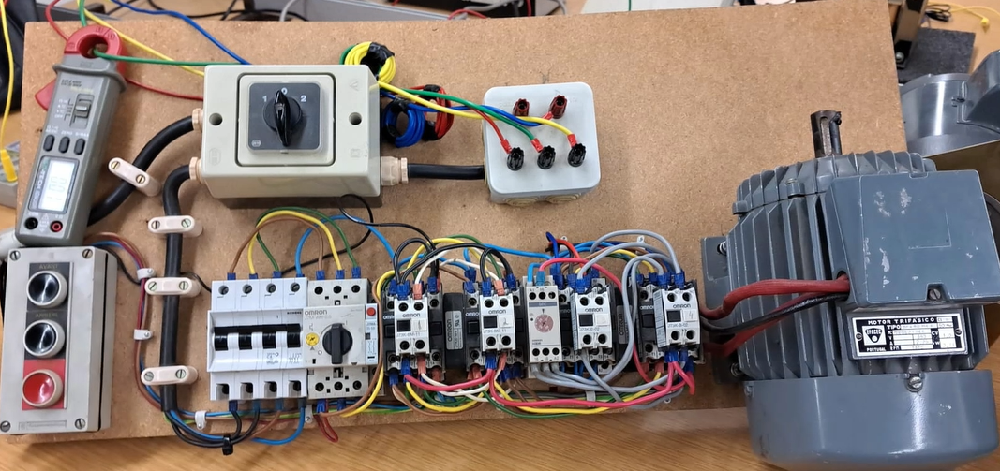

Eletrotecnia e Instalações Elétricas
Contactores, disjuntores e a lógica que arranca um motor..
Unidade curricular
Eletrotecnia e Instalações Elétricas
Ano
2.º ano, 2.º semestre · 2023/24
Equipa
5 elementos

Sistemas de comando de motores elétricos.
Estudado e montagem de circuitos de comando industrial. Desde um simples circuito de arranque/paragem por botão de pressão, até um circuito completo de arranque estrela-triângulo com inversão de sentido de rotação de um motor trifásico.
Os esquemáticos foram também simulados na ferramenta CADE_SIMU.
Um motor elétrico transforma energia elétrica em energia mecânica, normalmente através da reação entre dois campos magnéticos: polos opostos atraem-se, polos iguais repelem-se.
Num motor DC, a carcaça dá suporte estrutural, o estator permanece fixo e gera o campo magnético que induz corrente no rotor, e o rotor gira em torno do seu eixo, produzindo o movimento de rotação.
Nos vídoes seguintes é explicado o funcionamento de contactores e disjuntores e dos circuitos:
Parte 1
Parte 2
Parte 3